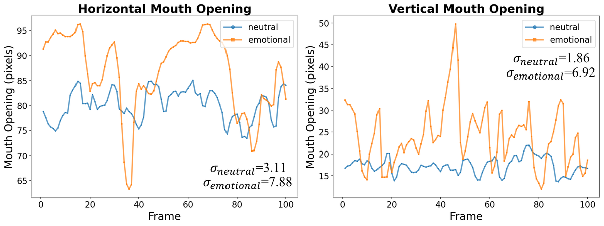
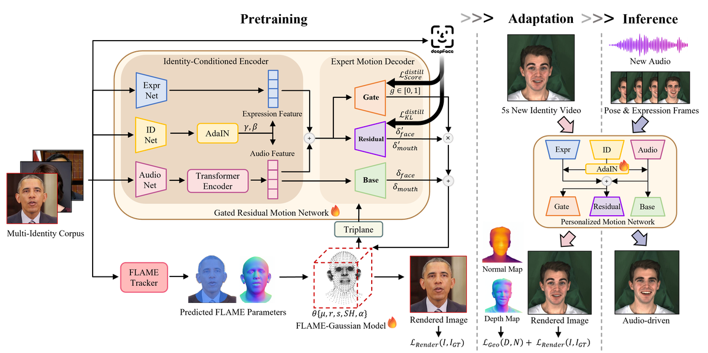
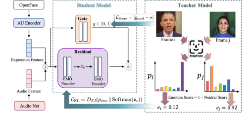
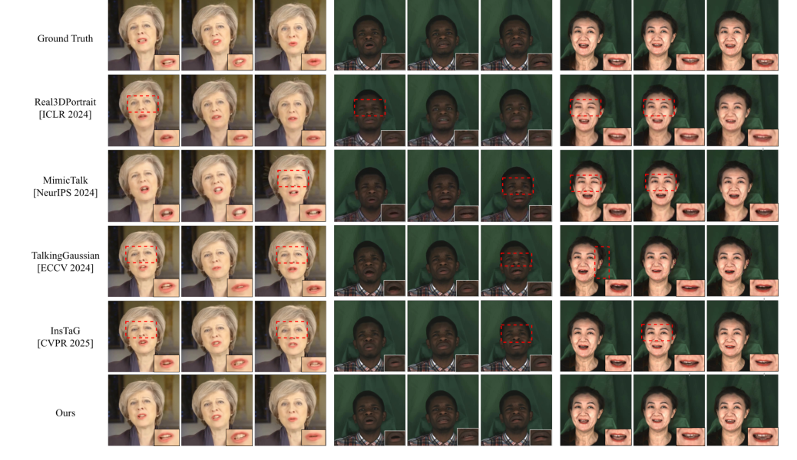
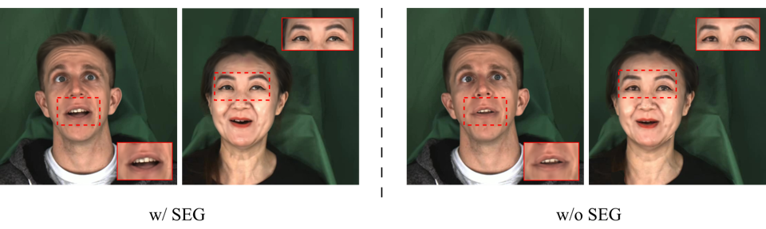

EmoTaG
简单摘要
这篇工作要解决的问题是：音频驱动的 3D 头部说话合成技术凭借神经辐射场 (NeRF) 和 3D 高斯散射 (3DGS) 得到了快速发展。
对应的核心做法是：通过利用丰富的预先训练的先验知识，少量镜头方法可以从短短几秒钟的视频中实现即时个性化。
从机制上看，关键设计在于：然而，在富有表现力的面部运动下，现有的少样本方法经常遭受几何不稳定和音频情感不匹配的影响，这凸显了对更有效的情感感知运动建模的需求。
训练或推理层面的重点是：在这项工作中，我们提出了 EmoTaG，这是一个基于预训练和适应范式构建的几次镜头情感感知 3D 头部说话合成框架。
实验层面的主要信号是：我们的主要见解是在结构化 FLAME 参数空间中重新制定运动预测，而不是直接使 3D 高斯变形，从而引入显式几何先验来提高运动稳定性。


简而言之，这篇论文关注的核心是：这篇工作要解决的问题是：音频驱动的 3D 头部说话合成技术凭借神经辐射场 (NeRF) 和 3D 高斯散射 (3DGS) 得到了快速发展。 对应的核心做法是：通过利用丰富的预先训练的先验知识，少量镜头方法可以从短短几秒钟的视频中实现即时个性化。 从机制上看，关键设计在于：然而，在富有表现力的面部运…
这篇工作要解决的问题是：音频驱动的头部说话合成旨在生成与音频同步的逼真面部动画，已成为数字人类和虚拟现实的关键技术。
对应的核心做法是：神经辐射场 (NeRF) 和 3D 高斯分布 (3DGS) 的出现极大地推进了 3D 头部说话合成。
从机制上看，关键设计在于：但当前的 3D 人物模型仍然依赖于分钟级的单目视频和主题优化，这阻碍了快速部署和可扩展的个性化。
训练或推理层面的重点是：一个有前途的方向是预训练和适应（PAA）范式，它学习通用的音频运动先验，并使用几秒钟的视频使其适应新的身份。
实验层面的主要信号是：然而，现有的基于 PAA 的管道主要关注中性语音场景，捕捉情感驱动的面部运动（现实世界人类交流的核心组成部分）的能力有限。
核心创新
综合引言与方法部分，这篇论文的核心创新可以概括为以下几方面：
1）问题定义与研究动机
这篇工作要解决的问题是：音频驱动的头部说话合成旨在生成与音频同步的逼真面部动画，已成为数字人类和虚拟现实的关键技术。
对应的核心做法是：神经辐射场 (NeRF) 和 3D 高斯分布 (3DGS) 的出现极大地推进了 3D 头部说话合成。
从机制上看，关键设计在于：但当前的 3D 人物模型仍然依赖于分钟级的单目视频和主题优化，这阻碍了快速部署和可扩展的个性化。
训练或推理层面的重点是：一个有前途的方向是预训练和适应（PAA）范式，它学习通用的音频运动先验，并使用几秒钟的视频使其适应新的身份。
实验层面的主要信号是：然而，现有的基于 PAA 的管道主要关注中性语音场景，捕捉情感驱动的面部运动（现实世界人类交流的核心组成部分）的能力有限。
2）方法框架与核心模块
这篇工作要解决的问题是：EmoTaG 由两个主要组件组成。
对应的核心做法是：），它提供了稳健的结构 3D 先验；。
从机制上看，关键设计在于：）采用三个互补的运动分支。
训练或推理层面的重点是：我们进一步纳入语义情感指导（第 2 节）。
实验层面的主要信号是：），它从预训练的情感识别器中提取情感分布和强度分数，以指导解码器中的残差和门分支，而无需手动注释。
3）实验设计与工程价值
这篇工作要解决的问题是：我们在 HDTF 数据集上训练 EmoTaG，使用来自 70 个身份的 70 个视频（每个视频 90-240 秒）来学习与身份无关的音频运动先验。
对应的核心做法是：为了评估，我们构建了两个测试集。
从机制上看，关键设计在于：一个中性集包含来自 的 10 个身份的 10 个公共视频，以及一个来自 MEAD 的情感集，涵盖 5 种情绪类别（快乐、悲伤、惊讶、愤怒和恐惧），每种情绪有 3 个强度级别和 2 个身份。
训练或推理层面的重点是：所有视频均以面部为中心进行裁剪并调整为 25 FPS。
实验层面的主要信号是：我们将 EmoTaG 与不同训练设置下的代表性 3D 头部说话基线进行比较。
技术细节
下面按照论文的方法章节结构展开，重点说明模型的关键模块、公式设计和训练策略。
这篇工作要解决的问题是：EmoTaG 由两个主要组件组成。
对应的核心做法是：），它提供了稳健的结构 3D 先验；。
从机制上看，关键设计在于：）采用三个互补的运动分支。
训练或推理层面的重点是：我们进一步纳入语义情感指导（第 2 节）。
实验层面的主要信号是：），它从预训练的情感识别器中提取情感分布和强度分数，以指导解码器中的残差和门分支，而无需手动注释。
$$ \mathcal{G}=\{g_i\}_{i=1}^{K},\quad g_i=(\boldsymbol{\mu}_i,\boldsymbol{r}_i,\boldsymbol{s}_i,\alpha_i,\mathbf{SH}_i), $$
这条公式用于定义模型中的核心计算关系：左侧给出目标量，右侧由输入与参数共同决定。阅读时可先关注 G、g_i、i、K 的物理/几何含义，再看它们如何影响训练目标或渲染结果。
$$ \boldsymbol{\mu}_i = \sum_{j=1}^{3} w_{ij}\mathbf{v}_j,\quad \sum_{j=1}^{3}w_{ij}=1,\; w_{ij}\ge0. $$
这条公式用于定义模型中的核心计算关系：左侧给出目标量，右侧由输入与参数共同决定。阅读时可先关注 j、v 的物理/几何含义，再看它们如何影响训练目标或渲染结果。
$$ \gamma, \beta = \mathrm{MLP}(\mathbf{s}), $$
这条公式用于定义模型中的核心计算关系：左侧给出目标量，右侧由输入与参数共同决定。阅读时可先关注 s 的物理/几何含义，再看它们如何影响训练目标或渲染结果。
$$ \tilde{\mathbf{F}} = \gamma \cdot \mathrm{InstanceNorm}(\mathbf{F}) + \beta. $$
这条公式用于定义模型中的核心计算关系：左侧给出目标量，右侧由输入与参数共同决定。阅读时可先关注 F 的物理/几何含义，再看它们如何影响训练目标或渲染结果。
$$ {\boldsymbol{\delta}} = {\boldsymbol{\delta}}_{\text{b}} + g \cdot {\boldsymbol{\delta}}_{\text{r}}. $$
这条公式用于定义模型中的核心计算关系：左侧给出目标量，右侧由输入与参数共同决定。阅读时可先关注 b、g、r 的物理/几何含义，再看它们如何影响训练目标或渲染结果。



把全文方法串起来看，这篇论文的逻辑基本都遵循同一条主线：先把输入组织成更容易处理的表示，再通过模型结构和损失函数把这个表示推向目标输出，最后用可视化与数值实验共同证明该设计有效。
实验结论
实验部分主要回答两个问题：第一，方法是否真的优于已有基线；第二，这种优势来自哪一个设计决策。
这篇工作要解决的问题是：我们在 HDTF 数据集上训练 EmoTaG，使用来自 70 个身份的 70 个视频（每个视频 90-240 秒）来学习与身份无关的音频运动先验。
对应的核心做法是：为了评估，我们构建了两个测试集。
从机制上看，关键设计在于：一个中性集包含来自 的 10 个身份的 10 个公共视频，以及一个来自 MEAD 的情感集，涵盖 5 种情绪类别（快乐、悲伤、惊讶、愤怒和恐惧），每种情绪有 3 个强度级别和 2 个身份。
训练或推理层面的重点是：所有视频均以面部为中心进行裁剪并调整为 25 FPS。
实验层面的主要信号是：我们将 EmoTaG 与不同训练设置下的代表性 3D 头部说话基线进行比较。

- 方法在核心指标上的优势与结构设计和训练目标直接相关；
- 消融实验表明，拿掉关键模块后性能与结果质量都有明显回落；
- 论文不仅比较数值，也关注可视化质量、稳定性和泛化能力等更贴近真实使用的信号。
理解评价
这篇工作要解决的问题是：我们提出了 EmoTaG，一种新颖的情感感知 3D 头部说话框架，具有少量的个性化功能。
对应的核心做法是：由于纠缠的运动表示忽视了韵律线索并损害了结构稳定性，现有的方法在情感场景上遇到了困难。
从机制上看，关键设计在于：EmoTaG 通过明确的解开来解决这个问题。
训练或推理层面的重点是：门控残差运动网络 (GRMN) 将语音发音与情感驱动的调制分开，并通过知识蒸馏由语义情感指导进行指导。
实验层面的主要信号是：基于 AdaIN 的调制通过冻结 GRMN 并仅微调 5 秒视频中特定于身份的 AdaIN 参数，进一步实现了高效的适应。
如果把它当成研究参考，建议重点关注三件事：第一，这套方法真正依赖的归纳偏置是什么；第二，实验中真正拉开差距的模块是哪一个；第三，它的局限究竟来自数据、算力还是监督信号本身。
以下相关论文可以作为进一步追踪的入口：